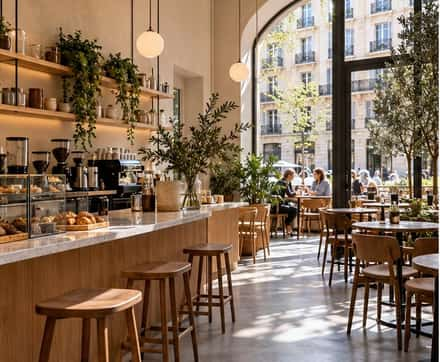
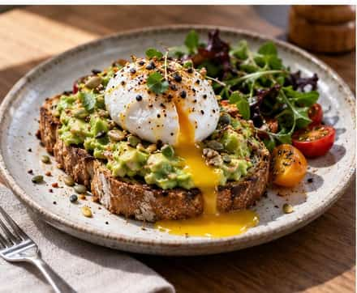
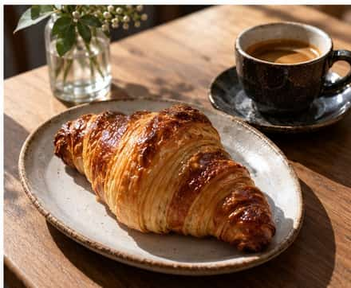
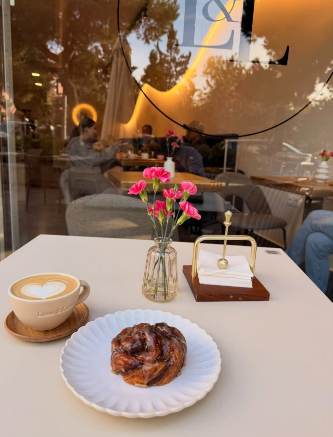
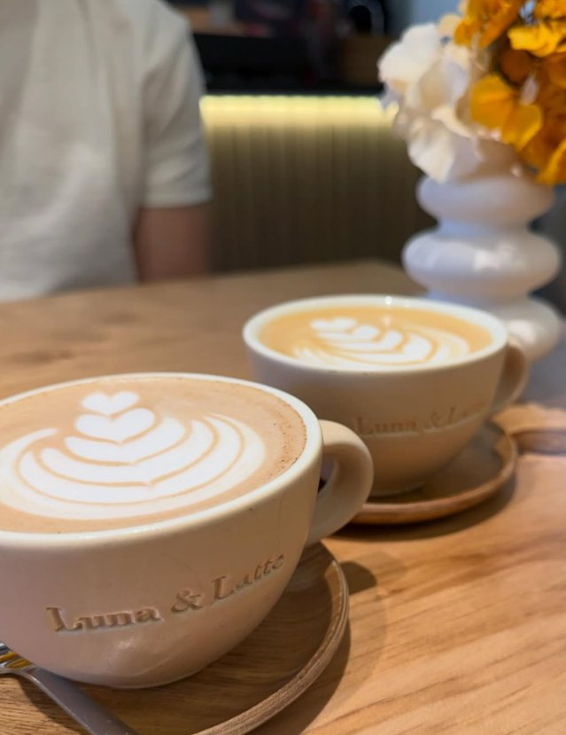
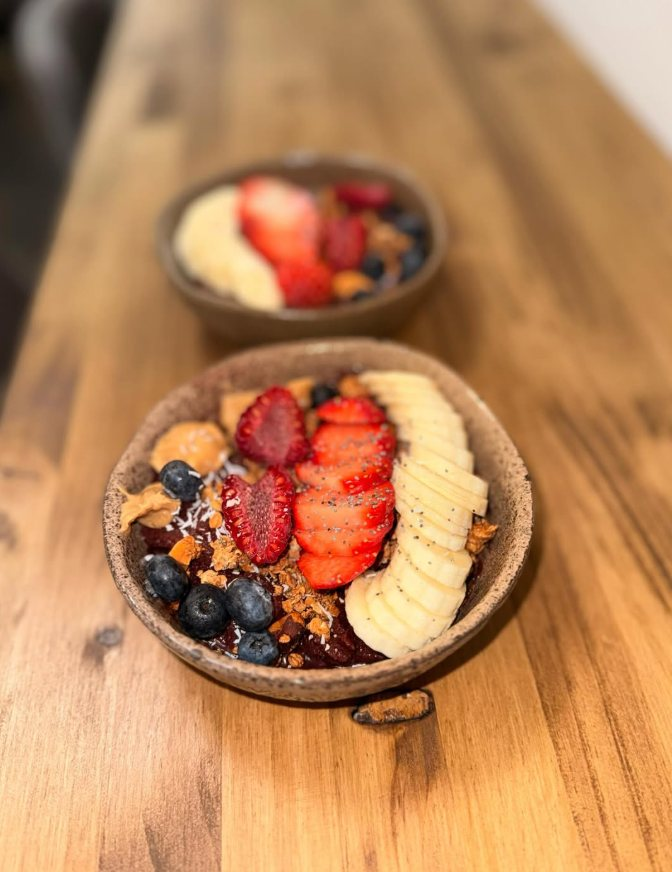

Ciudad Lineal · Madrid
Una mesapara la mañana.
Café de especialidad y brunch servido sin prisa, en Arturo Soria.
★★★★★
4,9 en Google
Lee las opiniones ↗

En el barrio de Arturo Soria, Luna & Latte reúne café de especialidad, bollería y brunch en un espacio luminoso con terraza.
La mañanase sirve despacio.
Del primer café a una tostada caliente. Una carta amplia para desayunar, compartir y alargar el brunch.

Entra porel café.Quédate.
Un café cuidado, una mesa luminosa y un ratito para ti.

TerrazaBrunchPara llevar
Sigue el día a día Para cadaantojo.
Un café bien hecho, algo recién horneado y una mesa que invita a quedarse.





«El local es muy luminoso y también cuenta con terraza.»
AliOli’s Foodie · reseña independiente
Lee la reseña completa ↗Te esperamospor aquí.
Calle Torrecilla del Puerto, 5
28043 Madrid
HORARIO PUBLICADO
- Lunes
- 8:30–19:00
- Martes
- Cerrado
- Miércoles
- 8:30–14:30
- Jueves y viernes
- 8:30–19:00
- Sábado
- 8:30–14:30
- Domingo
- 9:00–15:00
Puede variar en festivos; confirma antes de venir.
PARA LLEVAR
Para llevar